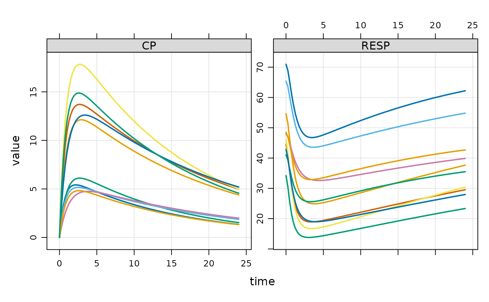

Interact with mrgsimsds objects
Usage
# S3 method for class 'mrgsimsds'
dim(x)
# S3 method for class 'mrgsimsds'
head(x, n = 6L, ...)
# S3 method for class 'mrgsimsds'
tail(x, n = 6L, ...)
# S3 method for class 'mrgsimsds'
names(x)
# S3 method for class 'mrgsimsds'
plot(
x,
y = NULL,
...,
nid = 5,
batch_size = 20000,
logy = FALSE,
.dots = list()
)Arguments
- x
an mrgsimsds object, output from
mrgsim_ds()oras_mrgsim_ds().- n
number of rows to return.
- ...
arguments to be passed to or from other methods.
- y
a formula for plotting simulated data; if not provided, all columns will be plotted.
- nid
number of subjects to plot.
- batch_size
size of batch when reading data for plot method.
- logy
if
TRUE, plot data with log y-axis.- .dots
a list of items to pass to
mrgsolve::plot_sims().
Examples
mod <- house_ds(end = 24)
mod <- omat(mod, diag(0.04, 4))
data <- ev_expand(amt = c(100, 300), ID = 1:20)
set.seed(10203)
out <- mrgsim_ds(mod, data = data)
dim(out)
#> [1] 3920 7
head(out)
#> # A tibble: 6 × 7
#> ID time GUT CENT RESP DV CP
#> <dbl> <dbl> <dbl> <dbl> <dbl> <dbl> <dbl>
#> 1 1 0 0 0 70.9 0 0
#> 2 1 0 100 0 70.9 0 0
#> 3 1 0.25 68.8 30.9 68.9 1.94 1.94
#> 4 1 0.5 47.3 51.7 65.1 3.24 3.24
#> 5 1 0.75 32.6 65.5 61.1 4.10 4.10
#> 6 1 1 22.4 74.5 57.6 4.66 4.66
tail(out)
#> # A tibble: 6 × 7
#> ID time GUT CENT RESP DV CP
#> <dbl> <dbl> <dbl> <dbl> <dbl> <dbl> <dbl>
#> 1 40 22.8 1.81e-11 124. 39.1 5.57 5.57
#> 2 40 23 1.28e-11 123. 39.2 5.52 5.52
#> 3 40 23.2 9.11e-12 122. 39.4 5.46 5.46
#> 4 40 23.5 6.44e-12 121. 39.5 5.41 5.41
#> 5 40 23.8 4.56e-12 119. 39.7 5.36 5.36
#> 6 40 24 3.23e-12 118. 39.8 5.30 5.30
nrow(out)
#> [1] 3920
ncol(out)
#> [1] 7
plot(out, ~ CP + RESP, nid = 10)
